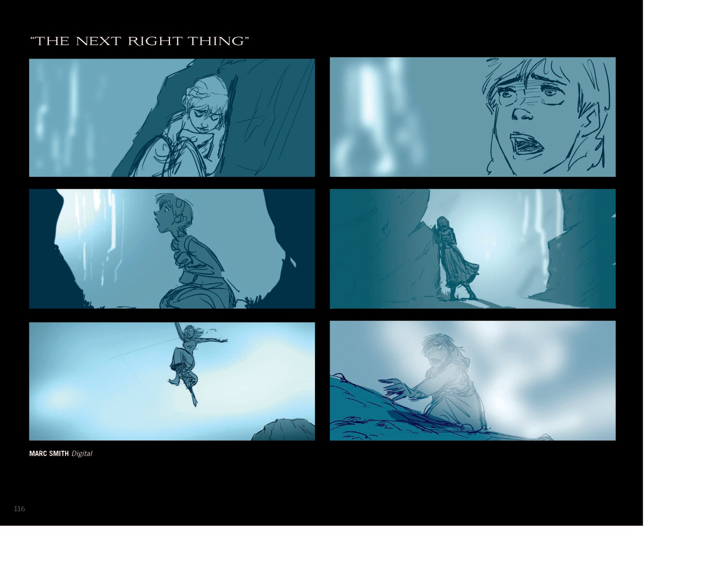

安娜独唱 · Kristen Bell · 时长 3:36
Anna:
安娜：
I've seen dark before
我曾见过黑暗
But not like this
但从不是这样
This is cold
这是寒冷
This is empty
这是空虚
This is numb
这是麻木
The life I knew is over
我所熟悉的生活已经结束
The lights are out
灯光熄灭了
Hello, darkness
你好，黑暗
I'm ready to succumb
我已准备屈服
I follow you around
我一直追随你
I always have
一直都是
But you've gone to a place I cannot find
但你去了我找不到的地方
This grief has a gravity
这份悲伤有一种重力
It pulls me down
把我往下拉
But a tiny voice whispers in my mind
但一个微小的声音在我脑海中低语
You are lost, hope is gone
你迷失了，希望已逝
But you must go on
但你必须继续
And do the next right thing
并做下一步对的事
Can there be a day beyond this night?
这黑夜之外还会有白昼吗？
I don't know anymore what is true
我已不再知道什么是真实
I can't find my direction, I'm all alone
我找不到方向，我孤身一人
The only star that guided me was you
唯一指引我的星辰就是你
How to rise from the floor
如何从地上站起
When it's not you I'm rising for?
当我不再为你而站起？
Just do the next right thing
只要做下一步对的事
Take a step, step again
走一步，再走一步
It is all that I can to do
这是我所能做的一切
The next right thing
下一步对的事
I won't look too far ahead
我不会看太远
It's too much for me to take
那对我来说太多了
But break it down to this next breath
但把它分解到下一次呼吸
This next step
下一步
This next choice is one that I can make!
下一个选择是我能够做出的！
So I'll walk through this night
所以我会走过这黑夜
Stumbling blindly toward the light
跌跌撞撞地走向光明
And do the next right thing
并做下一步对的事
And with the dawn, what comes then?
黎明到来时，又会怎样？
When it's clear that everything will never be the same again
当一切明了，万事再不相同
Then I'll make the choice
那时我会做出选择
To hear that voice
倾听那个声音
And do the next right thing
并做下一步对的事
来源：Disney 官方 / Frozen II (2019) 原声带
安娜（Anna）的独唱，由 Kristen Bell 演唱，时长约 3 分 36 秒。是全片最黑暗时刻的内心独白，一首关于悲伤、抑郁与韧性的沉静叙事歌。
描写安娜在以为同时失去姐姐艾莎与雪宝后的崩溃与重生。歌词从"我曾见过黑暗，但从不是这样"的麻木，到"这份悲伤有一种重力，把我往下拉"，再到内心微小的声音"你必须继续，做下一步对的事"。核心信息是：在不知道该做什么时，不必眺望遥远未来，只需把不可能的前途拆解成"下一次呼吸、下一步、下一个选择"——一种被谱成音乐的认知行为疗法。
处于剧情最低谷：安娜独处黑暗洞穴（绝望的具象化），在崩溃中一步步找回行动力。它承接克里斯托夫戏谑的《Lost in the Woods》，以完全严肃的方式呈现相似的"失败后继续向前"主题，但安娜的赌注更高。歌曲推动她从瘫痪走向行动，为最终抉择埋下伏笔。
据主创访谈，本曲脱胎于真实的个人悲剧：联合导演 Chris Buck 在《Frozen》宣传期失去了儿子，音乐制作核心人物 Andrew Page 失去了女儿。Anderson-Lopez 写词时"想到的就是他们，为他们而写"。Kristen Bell 则坦言从自身焦虑与抑郁经历汲取灵感，并把"做下一步对的事"作为个人人生信条（起床、刷牙、吃早餐、看日历去上班），希望安娜成为内在动机的榜样，帮助孩子应对情绪。
Bell 主动向导演 Jennifer Lee 提出，想让安娜"正面面对自己的依赖共生（codependency）"，要一首"当她不知道该做什么时该怎么做的歌"，最终由 Lopez 夫妇发展成更深刻的曲作。录制上 Bell 以克制、近乎耳语的方式演绎前半段，再逐步推向坚定宣言，与角色从崩溃到站起的情绪弧线同步。
被广泛赞誉为迪士尼作品中"对悲伤、抑郁与韧性最诚实、有力的刻画之一"。乐评认为它把宏大的痛苦转化为具体可执行的微小步骤，真实而治愈。《Los Angeles Times》将其评为《Frozen II》最佳歌曲；粉丝与心理健康倡导者尤其推崇其去污名化的表达。
随 2019 年 11 月 18 日原声带发行，在 Kid Digital Songs 榜单最高排名第 7。原声带获 2020 年格莱美"最佳影视媒体合辑"提名；《Into the Unknown》获格莱美"最佳影视媒体创作歌曲"提名及奥斯卡最佳原创歌曲提名。本曲虽未获主要 song 类大奖，但其对心理健康的坦诚呈现使它成为《Frozen II》最具社会讨论度的曲目之一，并在北萨米语等特别配音版本中被重点呈现。